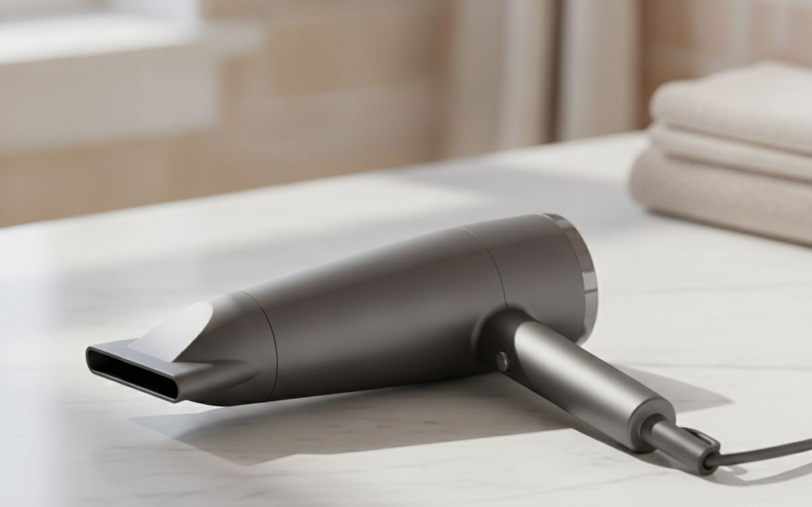
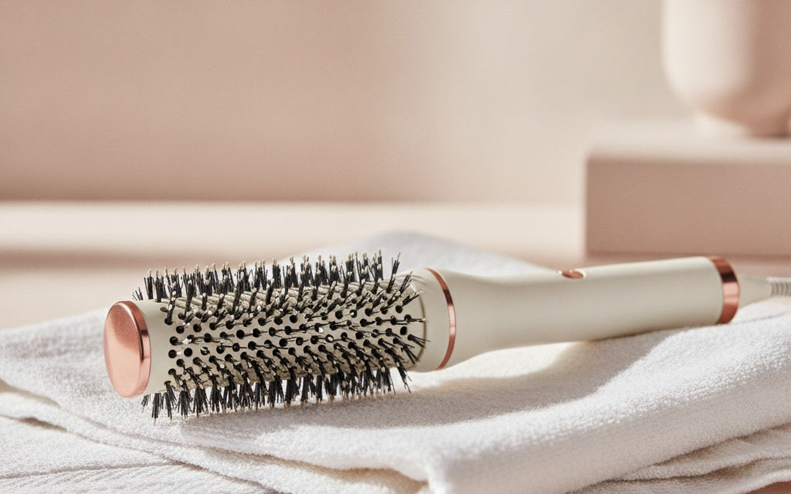
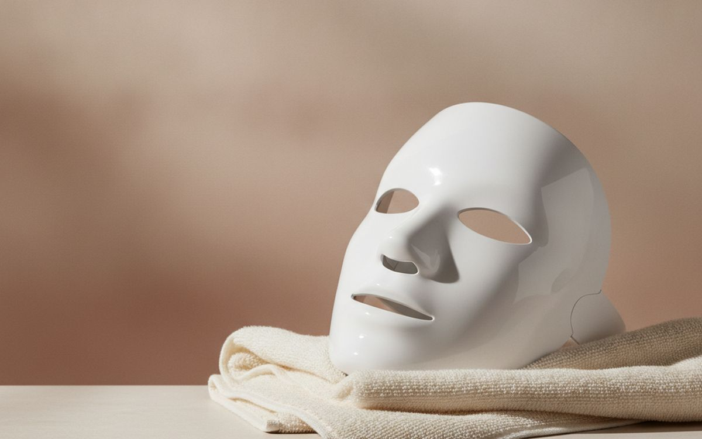
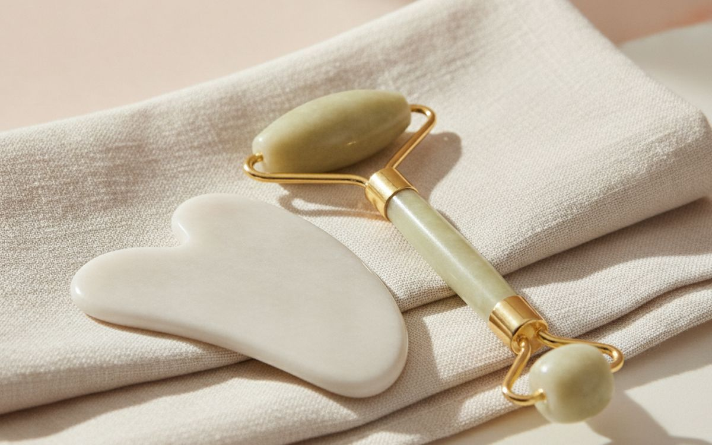
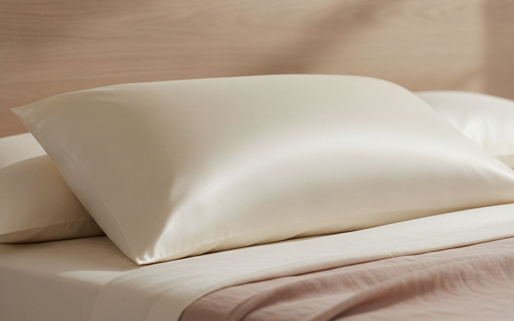
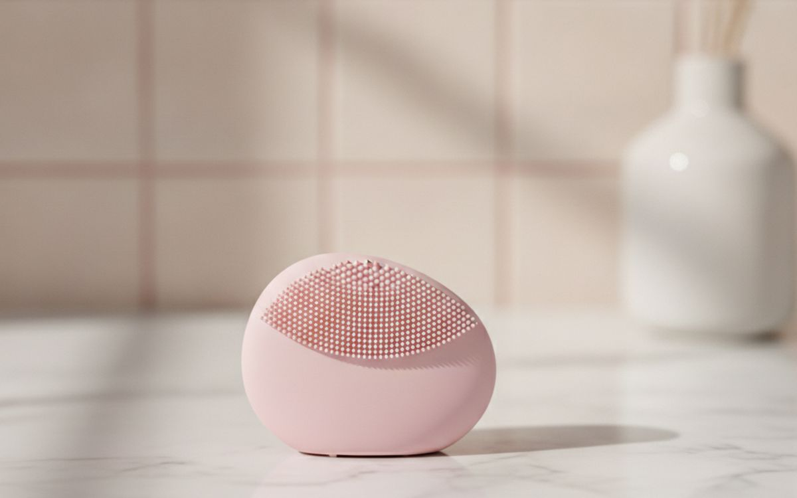
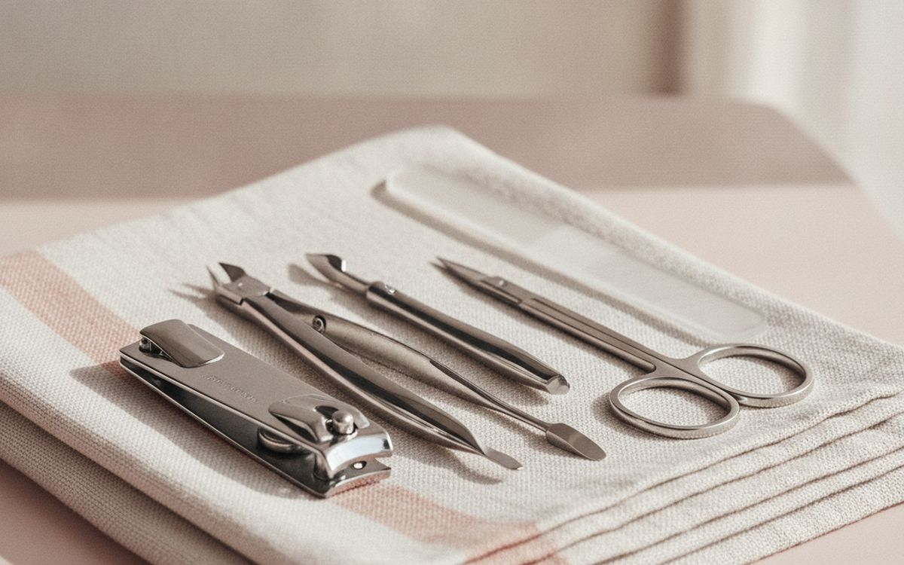
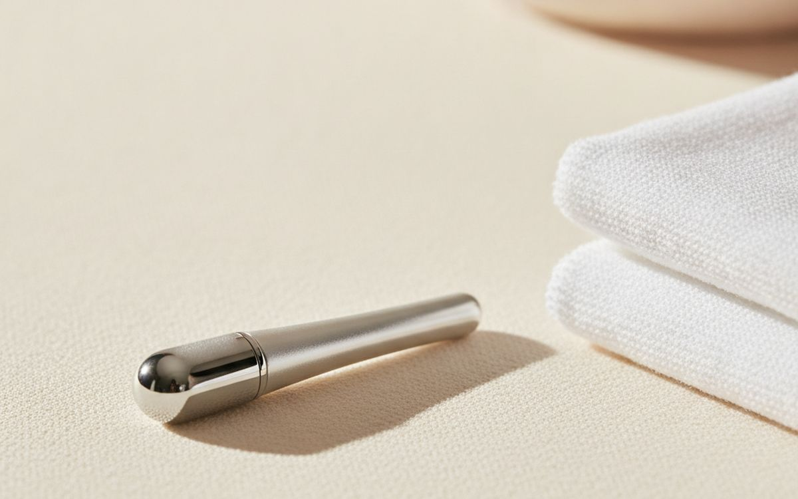
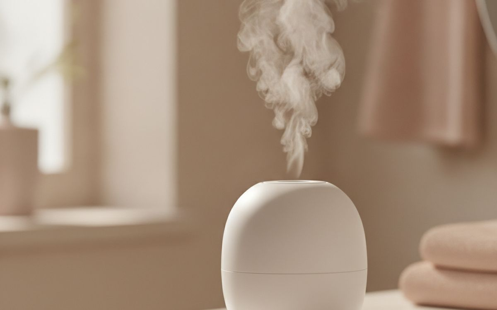
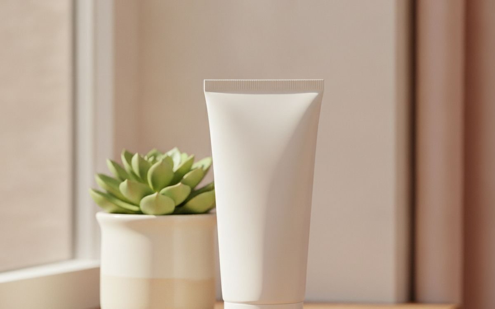

Un regard sceptique sur les appareils à domicile que tout le monde s'arrache : ce que la science confirme, ce qu'elle infirme, et ce qu'une simple serviette fait gratuitement.
Les appareils de beauté sont la catégorie où le marketing a le plus d'avance sur la science. Les promesses sont formulées dans un langage qui se veut clinique sans l'être, et des mots comme « régénérer », « revitaliser » et « booster » sont choisis précisément parce qu'ils ne veulent rien dire de spécifique et ne peuvent donc pas être faux.
Cette liste s'organise donc autour d'une question simple : que fait l'appareil, concrètement, d'un point de vue mécanique, et y a-t-il des preuves crédibles de son efficacité ? Certains sont de vrais bons outils. D'autres sont des rituels agréables aux effets modestes, et nous le disons clairement plutôt que de faire semblant.
Rien de ce qui suit ne constitue un avis médical et aucun de ces produits ne traite une affection cutanée. Si vous souffrez d'acné persistante, de chute de cheveux, de rosacée ou de problèmes de pigmentation, un dermatologue fera plus pour vous en une seule consultation que n'importe quel appareil de cette page. Faites un test cutané avec tout nouvel appareil et suivez à la lettre les consignes de sécurité pour les yeux avec tout ce qui émet de la lumière.
Les prix sont approximatifs au moment de la rédaction.
Transparence. Les liens de cette page sont des liens affiliés. Si vous achetez via l’un d’eux, nous pouvons percevoir une commission sans surcoût pour vous. Cela n’influence ni le contenu de cette liste ni son ordre.
Comment nous avons choisi
Notre sélection : Nous avons cherché un mécanisme plausible et des preuves indépendantes, pas des promesses de marques. Quand un appareil est soutenu par des études sérieuses, nous le disons. Quand l'effet est surtout temporaire, cosmétique ou relève du rituel agréable, nous le disons aussi. Nous n'avons pas testé personnellement ces produits, et les résultats varient énormément selon le type de peau et de cheveux. Rien dans cet article ne constitue un diagnostic ou un traitement médical.
En un coup d’œil
Les prix sont indicatifs au moment de la rédaction et changent souvent.
Notre sélection

1
L'appareil le plus efficaceUn sèche-cheveux ionique avec embout concentrateur
$60–400
De tous les appareils de cette page, un bon sèche-cheveux est celui qui change le plus de choses pour le plus de monde. Les dommages causés par la chaleur sont cumulatifs, et un sèche-cheveux qui sèche plus vite à une température plus basse en cause beaucoup moins, de façon mesurable. Les caractéristiques qui comptent sont le débit d'air plutôt que la puissance en watts, une vraie touche d'air froid pour fixer la coiffure, et un embout concentrateur, qui dirige l'air le long du cheveu au lieu de le projeter dans tous les sens. Les modèles très chers sont plus silencieux, plus légers et plus rapides, ce qui fait une vraie différence de confort au quotidien sur plusieurs années. Mais un sèche-cheveux de milieu de gamme bien utilisé vaut mieux qu'un modèle cher tenu trop près.
Pourquoi il est là
- Séchage plus rapide = moins de dommages thermiques cumulés
- L'embout concentrateur améliore vraiment le résultat
- La touche d'air froid fixe bien la coiffure
Bon à savoir
- La puissance en watts est un mauvais indicateur, regardez le débit d'air
- Le prix élevé paie le confort plus que le résultat

2
Remplace deux outils par un seulUne brosse coiffante à air chaud
$50–150
Elle fait le travail d'un sèche-cheveux et d'une brosse ronde en même temps. C'est important, car le plus dur dans un brushing maison, c'est de coordonner ses deux mains avec une brosse et un embout. Un seul outil divise la difficulté par deux, et pour la plupart des gens, cela donne un résultat visiblement meilleur. Idéal sur cheveux mi-longs avec un peu de volume naturel. Les cheveux très courts n'offrent pas assez de prise aux picots, et les cheveux très épais ou drus ont généralement besoin de plus de puissance. Utilisez-la sur cheveux humides et non trempés : pré-séchez-les à environ 80 % d'abord.
Pourquoi il est là
- Le coiffage à une main est beaucoup plus facile
- De bons résultats pour ceux qui n'arrivent pas à faire un brushing
- Moins cher qu'un sèche-cheveux et des visites au salon
Bon à savoir
- Peu efficace sur cheveux très courts, très épais ou drus
- Plus lent qu'un vrai sèche-cheveux sur cheveux longs

3
Quelques preuves, mais de grosses réservesUn masque de luminothérapie LED
$100–400
C'est l'appareil pour lequel l'honnêteté est primordiale. Il existe un vrai corpus de recherche sur la lumière rouge et bleue en dermatologie, mais les masques grand public sont bien moins puissants que les équipements utilisés dans ces études. Attendez-vous donc à un effet plus faible, voire inexistant, et qui n'apparaîtra qu'après des mois d'utilisation quasi quotidienne, pas en quinze jours. N'achetez que des marques qui publient les longueurs d'onde et l'irradiance, et qui fournissent une protection oculaire adéquate. Suivez les consignes pour les yeux à la lettre. Si vous êtes enceinte, si vous prenez des médicaments photosensibilisants ou si vous souffrez d'une maladie liée à la sensibilité à la lumière, demandez l'avis d'un médecin avant toute utilisation.
Pourquoi il est là
- Repose sur une vraie base de recherche en dermatologie
- Passif : on peut le porter sans rien faire
- Pas de consommables
Bon à savoir
- Les appareils grand public sont bien moins puissants que les appareils cliniques
- Nécessite des mois d'utilisation régulière ; la sécurité des yeux est cruciale

4
Agréable, modeste, temporaireUne pierre de gua sha ou un rouleau pour le visage
$12–35
Soyons honnêtes. Masser le visage déplace les fluides, ce qui réduit temporairement les poches du matin autour des yeux et de la mâchoire. Cet effet est réel, mais il est aussi temporaire : c'est un drainage, pas une modification de votre visage. Ce que ces outils ne font pas, c'est lifter, raffermir ou remodeler quoi que ce soit de façon permanente, quoi qu'en disent les photos avant/après. Si on le considère comme un objet bon marché offrant quelques minutes de détente qui laissent le visage moins bouffi, une pierre de gua sha est un bon investissement. Utilisez-la toujours avec une huile ou un sérum pour la glisse ; frotter une pierre sur une peau sèche est le meilleur moyen de l'irriter.
Pourquoi il est là
- Réduit vraiment les poches du matin
- Bon marché, et offre quelques minutes agréables
- Rien à casser ou à recharger
Bon à savoir
- L'effet est un drainage temporaire, pas un lifting
- Nécessite une huile ou un sérum, sinon irrite la peau

5
Bon marché et discrètement efficaceUne taie d'oreiller en soie ou en satin
$20–60
Le coton accroche les cheveux et tire sur la peau pendant la nuit, ce qui explique en grande partie pourquoi certaines personnes se réveillent avec les joues plissées et des frisottis. Une surface plus lisse réduit cette friction. Pour les cheveux bouclés, fins ou traités chimiquement, la différence en termes de frisottis et de casse au réveil est notable, pas seulement théorique. Elle n'absorbe pas non plus l'humidité de la peau et des cheveux comme le fait le coton. C'est l'un des rares articles de beauté vraiment peu coûteux et sans effort qui tient ses promesses, en grande partie parce que la promesse est modeste et mécanique. Le satin offre des résultats similaires à la soie pour beaucoup moins cher.
Pourquoi il est là
- Moins de friction = moins de frisottis et de casse
- Ne demande aucun effort ni changement de routine
- Le satin offre la plupart des avantages pour bien moins cher
Bon à savoir
- La soie nécessite un lavage délicat
- N'agit que sur les cheveux en contact avec l'oreiller

6
Seulement si votre peau le tolèreUne brosse nettoyante électrique pour le visage
$30–150
Une brosse nettoyante démaquille et enlève la crème solaire plus en profondeur que les doigts, ce qui est un vrai avantage si vous portez des produits couvrants. Mais le nettoyage excessif est l'une des causes les plus courantes de peau irritée et réactive, et un appareil rend ce sur-nettoyage beaucoup plus facile. Les têtes en silicone sont un meilleur choix que les poils : elles n'abritent pas de bactéries et n'ont pas besoin d'être remplacées, ce qui supprime un coût récurrent. Utilisez-la quelques fois par semaine plutôt que deux fois par jour, arrêtez si votre peau devient tiraillée ou réactive, et oubliez-la complètement si vous utilisez des rétinoïdes ou des acides.
Pourquoi il est là
- Retire plus efficacement le maquillage et la crème solaire
- Les têtes en silicone n'ont jamais besoin d'être remplacées
- Étanche et facile à nettoyer
Bon à savoir
- Très facile de sur-nettoyer et d'irriter la peau
- Incompatible avec les routines à base de rétinoïdes ou d'acides

7
Ennuyeux, mais ça vaut vraiment le coupUn set de manucure de qualité
$25–60
Les limes en carton bas de gamme déchirent le bord de l'ongle au lieu de le limer, et c'est ce bord irrégulier qui est à l'origine des dédoublements et des cassures. Une lime en verre coupe nettement, dure quasiment une éternité et peut être lavée, contrairement à celles en carton. Un bon coupe-ongles en acier inoxydable coupe sans écraser. Le reste d'un set typique est facultatif, avec un avertissement spécifique : laissez vos cuticules tranquilles. Les repousser doucement après la douche, c'est bien ; les couper, non. C'est cette barrière qui protège le lit de l'ongle des infections, et les manucures qui la coupent sont la cause la plus fréquente d'infection au doigt.
Pourquoi il est là
- Les limes en verre coupent nettement et durent indéfiniment
- Lavables, contrairement aux limes en carton
- Prévient le dédoublement causé par les bords irréguliers
Bon à savoir
- Les limes en verre s'ébrèchent si on les fait tomber
- La plupart des sets incluent des outils que vous ne devriez pas utiliser

8
Une cuillère froide fait aussi l'affaireUn outil contour des yeux rafraîchissant en jade ou en métal
$10–30
Le froid resserre les vaisseaux sanguins, ce qui réduit les poches du matin autour des yeux pendant une heure ou deux. C'est tout le mécanisme, et ça marche. Ce qu'il faut savoir, c'est que le mécanisme, c'est le froid, pas l'outil. Une petite cuillère glacée, un gant de toilette humide et frais ou le dos d'une cuillère en métal sortie du frigo font exactement la même chose, gratuitement. Achetez l'outil si le fait d'en avoir un dédié dans le frigo vous incite à l'utiliser le matin, ce qui est une raison valable pour beaucoup de gens. Mais ne vous attendez pas à ce qu'il fasse quoi que ce soit de plus qu'une cuillère froide.
Pourquoi il est là
- L'effet rafraîchissant sur les poches est réel
- Bon marché
- En avoir un sous la main incite à l'utiliser
Bon à savoir
- Une cuillère froide fait le même travail gratuitement
- L'effet dure une heure ou deux, tout au plus

9
Un rituel agréable, un effet modesteUn sauna facial
$35–80
La vapeur hydrate temporairement la couche externe de la peau et ramollit les impuretés en surface, ce qui rend le nettoyage un peu plus efficace et le tout plus agréable. Elle n'ouvre pas les pores, car les pores ne sont pas des muscles et n'ont rien pour s'ouvrir. Cette expression est un raccourci marketing pour dire qu'elle ramollit ce qu'ils contiennent. Utilisé une fois par semaine, c'est un rituel agréable et peu risqué. Utilisé trop souvent, trop chaud ou trop près, il peut assécher et irriter la peau. Il est généralement déconseillé en cas de rosacée ou de peau très réactive. Tenez-le à trente centimètres de distance et limitez les séances à une dizaine de minutes.
Pourquoi il est là
- Vraiment agréable et relaxant
- Ramollit les impuretés avant le nettoyage
- Peu risqué si utilisé occasionnellement
Bon à savoir
- N'ouvre pas les pores, c'est une expression marketing
- Peut assécher ou irriter les peaux réactives si sur-utilisé

10
Celui qui a le plus de preuves scientifiquesUne crème solaire à large spectre que vous porterez vraiment
$12–40
Ce n'est pas un appareil et c'est le produit le moins excitant de cette liste, mais il est soutenu par plus de preuves scientifiques que tous les autres appareils de cette page réunis. Une protection solaire quotidienne à large spectre est la chose la plus efficace que vous puissiez faire contre le vieillissement de votre peau, et aucun masque LED ou sérum n'arrive à sa cheville. Le seul critère qui compte vraiment est que vous la portiez tous les jours. La texture et le fini ne sont donc pas des caprices : c'est ce qui fait la différence entre un flacon que vous utilisez et un flacon qui reste dans un tiroir. Essayez des échantillons jusqu'à ce que vous en trouviez un qui vous convienne, puis appliquez-en plus que ce qui vous semble nécessaire et renouvelez l'application si vous êtes à l'extérieur.
Pourquoi il est là
- De loin, la base de preuves la plus solide ici
- Bon marché par rapport à tous les appareils de cette page
- Agit sur la cause plutôt que sur l'apparence
Bon à savoir
- Ne fonctionne que si on l'applique tous les jours et généreusement
- Trouver une texture qu'on aime demande du temps et des essais
Questions fréquentes
Les masques LED fonctionnent-ils vraiment ?
La luminothérapie sur laquelle ils reposent fait l'objet de vraies recherches en dermatologie, mais les masques grand public sont beaucoup moins puissants que les appareils cliniques. Attendez-vous à un effet modeste après des mois d'utilisation régulière, pas à une transformation. N'achetez que des marques qui publient les chiffres de longueur d'onde et d'irradiance.
Quel est l'appareil de beauté le plus surcoté ?
Tout ce qui promet de lifter ou de raffermir la peau de façon permanente par le massage. Le massage déplace les fluides et procure une sensation agréable, ce qui n'est pas rien, mais il ne restructure pas les tissus. Les photos avant/après jouent beaucoup sur l'éclairage et l'angle de prise de vue.
Si je ne devais acheter qu'une seule chose, ce serait quoi ?
De la crème solaire, puis un bon sèche-cheveux si vous utilisez régulièrement la chaleur pour vous coiffer. Ce sont les deux produits qui ont l'effet le plus visible sur l'apparence de votre peau et de vos cheveux au fil des ans.
Les sèche-cheveux chers valent-ils leur prix ?
Ils sont plus légers, plus silencieux et plus rapides, ce qui représente une vraie différence de confort au quotidien si vous vous séchez les cheveux tous les jours. Ils ne répareront pas les cheveux abîmés. Un sèche-cheveux de milieu de gamme utilisé à une température plus basse et à une distance raisonnable fait presque aussi bien l'affaire.
← Tous les guides
En tant que Partenaire Amazon, nous percevons une commission sur les achats éligibles. Les prix et la disponibilité sont exacts à la date de publication et peuvent changer.